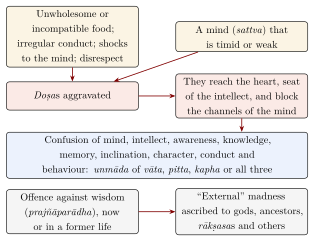

Chapter 8: The Clinical Branches¶
śalyaṃ śālākyaṃ kāyacikitsā bhūtavidyā kaumārabhṛtyam
agadatantraṃ rasāyanatantraṃ vājīkaraṇatantram iti
Extraction, the use of probes,
therapy of the body, the science of spirits,
the care of children, the doctrine of antidotes,
and the doctrines of rejuvenation and of virility.
— Suśruta Saṃhitā, Sūtrasthāna 1.7
8.1 Introduction¶
The eight branches of classical medicine (Table 1.3) were not separate professions in the modern sense: a single physician was expected to know them all, though the surgical school of Suśruta and the medical school of Caraka had different emphases, and some later physicians specialised in eye treatment, children’s diseases or snakebite. Surgery has been described in Chapter 4. This chapter surveys the other branches as the texts present them. It reports what the texts say; it does not recommend any treatment.
8.2 General Medicine (Kāyacikitsā)¶
Kāyacikitsā, “treatment of the body”, is the branch to which most of the Caraka compendium is devoted. The commentators explain kāya as the digestive fire, since disorders of digestion were thought to underlie most disease. The major diseases of the Nidāna- and Cikitsāsthānas (Chapter 3) belong here: fevers, bleeding disorders, abdominal swellings, urinary disorders, skin diseases, wasting, cough and dyspnoea, diarrhoea and disorders of digestion, anaemia and jaundice, swellings and abdominal enlargement, and the many disorders of vāta.
The texts describe each disease by its causes, premonitory signs, signs and course, distinguish varieties by the doṣas involved, and prescribe treatment that combines fasting or nourishment, purification or pacification, diet and compound drugs. Pallor (pāṇḍu) shows the approach. Caraka recognises five kinds: one for each doṣa, one due to all three, and one caused by eating earth (Ca.Ci. 16). Treatment includes purification, diet and preparations of iron, one of the classical prescriptions that seems to match a modern understanding, since iron deficiency is the commonest cause of anaemia; but the classical iron preparations were not standardised, and anaemia has many other causes. Āmavāta, first described as a separate disease by Mādhava (c. 700), is a painful, swollen condition of the joints attributed to āma carried by vāta to the joints, and its treatment begins with fasting and drugs to digest the āma. The “king’s disease” (rājayakṣman), a wasting disease with cough, fever and bloody sputum, is explained by the exhaustion of the bodily constituents and treated with nourishment, rejuvenating drugs and regimen; it includes, but is not identical with, tuberculosis.
8.2.1 Diarrhoea and Jaundice¶
Diarrhoea (atisāra) is described in many forms, by the doṣas and by the presence of āma, blood or mucus, and its treatment begins with fasting followed by thin rice gruels, buttermilk and astringent drugs. The emphasis on fluids and gruels is of interest in the light of modern medicine, which since the 1960s and 1970s has shown that oral rehydration—with a solution of salts and sugar, or with rice-based fluids—can prevent most deaths from diarrhoeal disease; the classical texts, however, did not understand dehydration as such, and their astringent and purgative drugs could make it worse. Jaundice (kāmalā) is described as a complication of anaemia or of disorders of pitta, with yellowness of the eyes, skin, nails and urine, and is treated with purgation and bitter drugs.
8.2.2 Fevers¶
Fever (jvara) is the first disease in every compendium, and Caraka’s account of it, with its periodic “irregular” fevers and its treatment by fasting before drugs, has been summarised in Chapter 3. Besides the doṣas and periodicity, he classifies fevers by whether they arise from within or from external causes such as injury, poison, curses or emotion, and by whether they affect the surface or the interior of the body. The tertian and quartan patterns point to malaria, which must have been one of the greatest causes of illness and death in ancient India. Modern antimalarial treatment, by contrast, depends on drugs—quinine from the cinchona tree of South America, and artemisinin, discovered in the 1970s by Chinese scientists working from a traditional Chinese remedy—that were unknown to the Indian classics.
8.2.3 Skin Diseases and Leprosy¶
The classical category of kuṣṭha covers eighteen skin diseases, seven “major” and eleven “minor”. It includes leprosy, whose signs—anaesthetic patches, ulceration, loss of fingers and toes, collapse of the nose—are described, but also psoriasis, eczema and many other conditions. The texts treat kuṣṭha with purification, bloodletting, bitter drugs such as khadira and neem, and applications; they also attribute it in part to sin, and the Dharmaśāstra literature treated leprosy as a consequence of evil deeds in a past life. People with leprosy were long excluded from society in India as elsewhere. Leprosy is now curable with multidrug therapy, which India has provided free of charge since the 1980s, but stigma persists.
8.2.4 Contagion, Pox and Cholera¶
Caraka explains the sickness of whole communities by the corruption of air, water, land and season (Chapter 3). Suśruta records a different idea. At the end of his chapter on skin diseases (Su.Ni. 5) he observes that certain diseases pass from one person to another through close association (which the commentator Ḍalhaṇa takes to mean sexual intercourse), touch, breath, eating together, sharing a bed or a seat, and using another’s clothes, garlands and unguents. He names kuṣṭha, fever, wasting and inflammation of the eyes, together with the “communicable” diseases (aupasargika), as passing from one person to another. The passage names no agent of disease and no mechanism beyond contact, and the same chapter also traces kuṣṭha to sin. What it records is an observation of transmission between persons that the theory of the doṣas could not easily explain, and it fits the practices of avoidance that grew up around leprosy and other diseases.
Suśruta lists the pox diseases (masūrikā, “lentil-like” eruptions) among the minor diseases (Su.Ni. 13), and the later diagnostic literature, notably Mādhava’s handbook (c. 700), gives them a chapter of their own, with their fever and pain, their eruptions of different colours and their often fatal course. The category probably covered smallpox, chickenpox and other eruptive fevers. Popular religion treated smallpox as the presence of the goddess Śītalā (Chapter 11). Inoculation with smallpox matter, which European observers described in eighteenth-century Bengal, was performed by specialist inoculators rather than by physicians of the Sanskrit tradition (see Volume 24, Samanvaya).
Viṣūcikā is an acute disorder with vomiting, purging, cramps and pains “as if pierced by needles”, which Suśruta treats as a disease of indigestion and overeating, together with two related conditions, alasaka and vilambikā (Su.Utt. 56). Nineteenth-century writers identified it with cholera, and the identification is still common. Whether the epidemic cholera of modern medicine was present in India before the nineteenth century is debated. The classical descriptions fit many kinds of acute gastroenteritis, and they do not describe the explosive spread through a community that marked the cholera epidemics. Portuguese observers in Goa, Garcia da Orta among them, described in the sixteenth century a swiftly fatal disease with vomiting and purging, which they called mordexim after a local name; it may well have been cholera, though the identification cannot be proved. What is certain is that an epidemic that began in lower Bengal in 1817 spread across India and then far beyond it, the first of a series of cholera pandemics that reached Asia, Africa, Europe and the Americas in the nineteenth century.
The epidemics of the colonial period posed problems that the classical texts did not address. Cholera, plague, which reached Bombay in 1896, and the influenza pandemic of 1918, which killed many millions in India, overwhelmed every medical system of the time. The colonial state answered plague with inspections, segregation camps, house searches and the Epidemic Diseases Act of 1897, measures that provoked widespread resistance. Vaidyas and ḥakīms published remedies and advice in pamphlets and newspapers, and some hospitals run by Indian communities during the plague offered treatment by indigenous practitioners to patients who feared the government’s hospitals. Historians have argued that these crises gave the indigenous practitioners a new public role and a political argument, that the state’s medicine did not reach most of the people (Arnold 2000). No indigenous remedy was shown to work against these diseases. The decisive advances came from sanitation, clean water, vaccination, antibiotics and, for cholera, oral rehydration.
8.3 Diseases of the Head and the Senses (Śālākya)¶
Śālākya, named after the probe (śalākā) used in many of its procedures, deals with the parts “above the collar-bone”: eyes, ears, nose, mouth, throat and head. Its fullest treatment is in the first 26 chapters of Suśruta’s Uttaratantra (Table 8.1).
| Organ | Number | Notes |
|---|---|---|
| eye | 76 | by the part affected: lids (21), junctions (9), white (11), black (4), the whole eye (17), the “seeing” part (12), with two more of external origin (Su.Utt. 1) |
| ear | 28 | Su.Utt. 20 |
| nose | 31 | Su.Utt. 22 |
| mouth | 65 | in seven sites: lips, gums, teeth, tongue, palate, throat and the whole mouth (Su.Ni. 16) |
| head | 11 | Su.Utt. 25 |
Suśruta’s ophthalmology is the most elaborate part of the branch. He describes the anatomy of the eye in terms of “circles” and “junctions” and of layers (paṭala); diseases of the lids such as styes, cysts and trichiasis, which he treats by excision, scraping and cautery; growths on the conjunctiva (arman, probably pterygium), which he excises; inflammations with discharge; and the disorders of the “seeing” part, among them timira (a progressive dimming of vision) and liṅganāśa (“loss of the sign”, blindness), one form of which corresponds to cataract. Diseases of the head (śiroroga) include a half-sided headache (ardhāvabhedaka) that has been compared with migraine.
Treatment combines systemic measures with local ones: collyria (añjana) and eye-washes, eye drops, retention of ghee in a ring of dough around the eye (tarpaṇa), fumigation, nasal medication, gargles and mouth-washes, as well as surgery—couching for cataract (Chapter 4), excision of growths of the conjunctiva, and operations on the lids. The daily application of collyrium to the eyes was part of the regimen of the healthy.
8.3.1 Ear, Nose and Throat¶
Suśruta’s twenty-eight diseases of the ear include earache, discharge, deafness, ringing in the ears, foreign bodies, worms and swellings of the ear canal; the treatments include ear-drops of oil, fumigation, cleaning with probes and the extraction of foreign bodies with forceps or by suction. Among the thirty-one diseases of the nose are a chronic catarrh (pīnasa), bleeding, polyps (nāsārśas), which he removes surgically, and loss of the sense of smell. Diseases of the throat include swellings that obstruct swallowing and breathing; the texts recognise some of these as dangerous and recommend urgent surgical treatment.
8.3.2 The Mouth and Teeth¶
Suśruta’s chapter on diseases of the mouth (Su.Ni. 16) describes disorders of the lips, gums, teeth, tongue, palate and throat, among them inflammation and abscess of the gums, loose teeth, caries attributed to “worms”, and growths in the throat that obstruct breathing and swallowing. Treatment includes scraping, cautery, the extraction of loose or decayed teeth with forceps, and medicated gargles and powders. The regimen of the healthy prescribes cleaning the teeth each morning with a twig of a bitter or astringent plant, chewed into a brush, and scraping the tongue.
8.4 Children, Pregnancy and Childbirth (Kaumārabhṛtya)¶
The care of children (kumāra; the branch is called kaumārabhṛtya, “the nurture of children”) included in classical practice the care of pregnant women, childbirth and the newborn. The compendia treat these topics in their Śārīrasthānas; there is also a specialised work, the Kāśyapa Saṃhitā. The main classical sources are listed in Table 8.2.
| Work | Chapters and subjects |
|---|---|
| Caraka Saṃhitā | Śā. 2–4 (conception, embryology); Śā. 8 (conception rites, pregnancy, birth, newborn, nursery); Ci. 30 (twenty yonivyāpad, breast milk, semen) |
| Suśruta Saṃhitā | Śā. 2–3 (semen and menstrual blood, conception, development of the embryo); Śā. 10 (pregnancy, birth, the newborn and the new mother); Ni. 8 and Ci. 15 (miscarriage, obstructed labour); Utt. 27–37 (the “seizers”); Utt. 38 (yonivyāpad) |
| Aṣṭāṅgahṛdaya | Śā. 1–2 (conception and embryology; disorders of pregnancy); Utt. 1–3 (care of children, their diseases, the “seizers”); Utt. 33–34 (diseases of the genital organs) |
| Kāśyapa Saṃhitā | children’s medicine and the nurse throughout; examination of infants; dentition; phakka; diseases of the new mother |
8.4.1 The Kāśyapa Saṃhitā¶
This work, also called the Vṛddhajīvakīya Tantra, presents itself as the teaching of Mārīca Kaśyapa, redacted by Vṛddhajīvaka and later by Vātsya. It was known only from quotations until a single, incomplete palm-leaf manuscript was found in Nepal and published by the royal preceptor Hemarāja Śarmā in 1938. In its present form it probably dates from about the seventh century CE (Meulenbeld 1999–2002). It discusses the examination of children, dentition, the qualities of breast milk and the choice of a wet-nurse, children’s diseases, preparations to be licked (lehana) by infants, and, at length, the “seizers” that attack children, among them the goddess Revatī.
The Kāśyapa Saṃhitā is notable for its attention to the stages of an infant’s development—the eruption of the teeth, the beginning of speech and walking, the change from milk to solid food—and to the examination of a child who cannot describe his symptoms. It devotes long passages to the choice of a wet-nurse (dhātrī), who should be of the same caste, healthy, of good character and with healthy children of her own, and to the examination of breast milk, whose purity is tested by its colour, taste and behaviour when dropped into water. The emphasis on wet-nurses reflects the practice of the elite households for whom the text was written.
The children’s diseases discussed in the compendia and in the Kāśyapa Saṃhitā include fevers, diarrhoea and vomiting, cough, disorders of teething, skin eruptions, eye infections, worms, wasting, convulsions, and disorders attributed to faulty breast milk. The texts insist that children be treated with milder drugs in smaller quantities, preferably given through the mother’s or nurse’s milk or in sweet and palatable forms, and that harsh procedures be avoided. Modern medicine agrees that children are not small adults, but it has also shown that many of the diseases the texts describe—diarrhoea, pneumonia, measles, neonatal infections—require prompt and specific treatment, and that vaccination prevents many of them.
8.4.2 Menstruation, Fertility and Conception¶
The gynaecology of the compendia rests on a theory of menstrual blood. Caraka counts menstrual blood and breast milk among the by-products (upadhātu) of the nutrient fluid (Table 2.8). Suśruta calls the menstrual flow ārtava and treats it as fiery in nature, the female counterpart of the man’s cool, “lunar” semen. According to Suśruta it begins at about twelve years of age and ceases at about fifty (Su.Śā. 3).
The days after menstruation are the “season” (ṛtu) in which conception is possible, usually reckoned as twelve nights from the onset of the flow, of which the first three are excluded. The texts hold that intercourse on an even-numbered night produces a son and on an odd-numbered night a daughter. The belief has no basis, but it shows how closely the theory was tied to the wish for sons (Section 1.8). Suśruta names four requirements for conception in an agricultural image: the season (ṛtu), the field (kṣetra, the womb), the water (ambu, the nourishing fluid) and the seed (bīja) (Su.Śā. 2). The picture of the woman as field and the man as sower is shared with the Dharmaśāstra and runs through the whole of this literature.
The texts discuss at length why a couple may fail to conceive: defects of semen or menstrual blood, disorders of the womb, wrong timing, and the conduct of the parents (Chapter 3). They prescribe purification and diet for both partners before the attempt. Rahul Peter Das’s detailed study of these theories shows how far they treat the woman’s body as the place in which the man’s seed and the incoming self are joined and nourished (Das 2003).
8.4.3 Pregnancy¶
The compendia prescribe a regimen for each month of pregnancy (Ca.Śā. 8; Su.Śā. 10), consisting chiefly of milk, ghee, rice and other “sweet” and nourishing foods, with medicated preparations and, in the later months, oily enemas and vaginal tampons to prepare for delivery. They list things the pregnant woman should avoid—heavy exertion, sexual intercourse, fasting, anger and grief, riding in vehicles, looking at frightening things—and attribute congenital abnormalities to her behaviour, to the frustration of her cravings, or to the deeds of past lives. Rites to obtain a son (puṃsavana) are prescribed for the early months.
8.4.4 Miscarriage and the “Sleeping” Foetus¶
Suśruta distinguishes two kinds of pregnancy loss. Up to the fourth month the foetus is still fluid and is said to “flow out” (garbhasrāva). In the fifth and sixth months its body has become firm, and it is said to “fall” (garbhapāta) (Su.Ni. 8.10). The compendia list the causes of miscarriage—falls, blows, exertion, fasting, purgatives, suppression of natural urges, and the frustration of the pregnant woman’s longings. When bleeding threatens, they prescribe cooling, soothing and nourishing measures.
Caraka also describes conditions in which the foetus, deprived of nourishment, stops growing or “sleeps” in the womb and remains there beyond the normal term (upaviṣṭaka, nāgodara; Ca.Śā. 8.26). Belief in a dormant foetus that can later revive and be born is found in other pre-modern traditions as well. In Islamic law, for example, the doctrine of the “sleeping” foetus could protect a woman whose child was born long after her husband’s absence or death. Modern medicine knows nothing of the kind. A pregnancy that fails to grow needs examination, and the prolonged retention of a dead foetus is dangerous.
8.4.5 Childbirth and the Newborn¶
The texts describe the preparation of a lying-in house, the signs of approaching labour, the assistance of experienced women, the management of the placenta, and the immediate care of the newborn: clearing the mouth and throat, rousing the child, cutting and tying the umbilical cord, bathing and the first feeding. If the newborn does not breathe, the texts recommend rousing it by striking two stones together near its ear, sprinkling it with cold or hot water and fanning it—an early recognition of the need to stimulate a newborn who fails to breathe, though modern newborn resuscitation is very different. In the birth rite (jātakarman) honey and ghee are given to the newborn with mantras; some texts add gold. Suśruta’s chapter on obstructed labour (Su.Ci. 15) has been described in Chapter 4.
8.4.6 The Mother after Childbirth¶
The new mother (sūtikā) was regarded as both vulnerable and ritually impure. The compendia prescribe for her a period of rest and seclusion in the lying-in house. Her care includes massage with oil, warm baths, binding of the abdomen and warmth, with a graded diet that begins with thin gruels prepared with digestive spices and returns gradually to ordinary food. Suśruta sets the period at about a month and a half, or until menstruation returns (Su.Śā. 10). The Kāśyapa Saṃhitā and later works add a class of “diseases of the new mother” (sūtikāroga), among them fevers, swellings and wasting after childbirth, many of which must have been puerperal infections.
The seclusion, the special foods, the warmth and the massage survive in household customs of postnatal care across South Asia, and anthropologists of childbirth have studied them closely (Jeffery et al. 1989). The idea that mother and newborn were ritually impure for a period after birth also determined who attended them. In much of northern India the cutting of the cord and the handling of the afterbirth fell to the dāī, whose low status was bound up with the polluting character of her work (Chapter 11).
8.4.7 Infant Feeding and the Nursery¶
The texts divide early childhood by diet: the infant fed only on milk (kṣīrapa), up to about one year; the child who takes milk and food (kṣīrānnāda), up to about two; and the child who lives on food (annāda) (Su.Sū. 35). Breast milk is the ideal food. The compendia describe its good qualities and its defects, attributing the defects to the doṣas and recognising them by colour, taste, smell and behaviour in water. They treat these defects by treating the nursing mother or wet-nurse (dhātrī), not the child.
For the first three days, before the milk was thought to have come in, Suśruta prescribes honey and ghee with herbs, and only then the breast (Su.Śā. 10). Modern advice is the opposite: breastfeeding should begin within the first hour, because the first milk, colostrum, protects the newborn against infection. Delayed breastfeeding and the giving of other substances in the first days, a custom the texts reflect and that survived widely, have been a cause of illness and death among newborns.
Caraka’s chapter on birth describes a nursery (kumārāgāra) that should be clean, airy and free of vermin, and the child’s bedding, clothing and amulets (Ca.Śā. 8.59–64). It also considers toys. They should be brightly coloured, make pleasant sounds and be light. They should have no sharp points and be too large to put in the mouth. And the child, it adds, should not be frightened with talk of demons.
The Kāśyapa Saṃhitā gives particular attention to the infant who cannot say where it hurts. One of its chapters explains how to infer the seat of pain from behaviour: crying, clenching the fists, rubbing a part of the body, or refusing the breast. The work also describes phakka, a disorder in which a child fails to walk at the normal age, attributed to faulty breast milk, to a new pregnancy of the mother, or to illness. Among other measures it recommends a small three-wheeled wooden cart (phakkaratha) to help the child learn to walk. The descriptions suggest the effects of malnutrition, including rickets, though diagnosis at this distance is uncertain.
8.4.8 Children’s Diseases and the “Seizers”¶
Many children’s diseases are attributed to “seizers” (graha), demonic beings who attack infants whose mothers or nurses have neglected cleanliness and ritual. Suśruta names nine, among them Skanda, Śakunī, Revatī and Pūtanā, describes the signs of each, and prescribes baths, oils, fumigations, amulets and offerings (Su.Utt. 27–37). The seizers are deities or demons of a type well known from Indian religion, and several—Skanda, Revatī, the bird-like Śakunī, the “stinking” Pūtanā—have counterparts in mythology and in protective rituals for children. Many of the conditions described are recognisable as fevers, convulsions, diarrhoea and wasting—the infections and malnutrition that killed so many children before modern medicine.
Health and Safety Note
The classical regimens for pregnancy, childbirth and infancy described in this section are historical, and some of them, such as delaying breastfeeding and giving honey to newborns, are now known to be unsafe. See Section 12.7.
8.4.9 Women’s Diseases¶
The compendia discuss the disorders of menstruation, the reproductive tract and breast milk at some length. Disorders of menstrual blood (ārtava) are classified by the doṣas; excessive bleeding (asṛgdara) is described as a separate disease. Caraka devotes the last chapter of the Cikitsāsthāna to twenty disorders of the female reproductive tract (yonivyāpad), and Suśruta discusses them in the Uttaratantra (Su.Utt. 38).
Caraka’s twenty disorders show what the texts cared about. Four are due to the doṣas singly and together. Others are named after their chief sign: painful, obstructed menstruation (udāvartinī), absence of menstruation (arajaskā), a narrow opening (sūcīmukhī), a dry passage (śuṣkā) and a “great” womb, apparently prolapse (mahāyoni). One, the “killer of sons” (putraghnī), is the repeated loss of pregnancies, which Caraka attributes to aggravated vāta. Another (ṣaṇḍhī) describes a woman who never menstruates and whose breasts do not develop, a condition the texts attribute to a defect in the parents’ seed and regard as incurable. Menstruation, sexual function and above all fertility dominate the list. Infertility is a recurrent concern, and although Caraka also discusses defects of semen (Section 8.8), the texts usually look for its cause in the woman. Excessive menstrual bleeding (asṛgdara, also called pradara) is treated with astringent and cooling drugs and with diet.
The texts also prescribe a regimen for women during menstruation, which forbids them, among other things, to bathe, to apply collyrium or to sleep by day, and which is closely connected to brahmanical ideas of ritual impurity. These passages tell us much about the medical understanding of women’s bodies in the period and about the social constraints placed on them; they are discussed further in Chapter 1.
8.4.10 Reading the Texts on Women and Children¶
These chapters are among the richest in the classical literature, and among the hardest to read fairly. Martha Ann Selby has read the narratives of conception, gestation and labour in Caraka, Suśruta and Vāgbhaṭa side by side. She notes that they speak almost entirely from the position of the male physician and of a household that wants a healthy son, and that the woman appears as the field and vessel of the pregnancy rather than as its subject. Yet the same texts attend closely to her cravings, her comfort and her fear, and require that experienced women stay with her through labour (Selby 2005).
Much of what the texts prescribe for labour and the newborn was in practice done by women they do not name, and whose knowledge has to be reconstructed from ethnography rather than from manuscripts. The physician, a man of high caste, was usually called to a birth only when something had gone wrong.
Seclusion made matters harder. In households that kept women in seclusion, a male physician of any tradition might be allowed to examine a woman only partly, and the Unani physician sometimes had to feel the pulse through a curtain. In the late nineteenth century this became an argument for training women as doctors. The Countess of Dufferin’s Fund, founded in 1885, supported hospitals for women and the medical education of women. In 1886 Anandibai Joshi graduated in medicine in Philadelphia and Kadambini Ganguly in Calcutta, among the first Indian women to qualify in Western medicine. Neither Āyurveda nor Unani produced a comparable body of women practitioners until women entered their colleges in the twentieth century.
The setting of these texts was grim. Before modern obstetrics and public health, a large share of children died in infancy and early childhood, and childbirth was one of the commonest causes of death among young women. The many rites and amulets for protecting mother and child, and the “seizers” of children’s medicine, are the response of a society that lived with these losses. The texts’ achievements deserve recognition: close observation of pregnancy and infancy, concern for gentle treatment of children, and attention to the mother’s well-being after birth. That recognition does not mean bringing their regimens into modern care. Programmes marketed today as garbha saṃskāra promise to shape a child’s intelligence, character or sex through the mother’s diet, music and rites in pregnancy. They go far beyond anything the evidence supports, and sex-selection in any form is illegal in India.
8.5 Disorders of the Mind and Possession (Bhūtavidyā)¶
The branch called “knowledge of spirits” (bhūtavidyā) dealt with disorders attributed to possession by gods, demons, ancestors and other beings. It overlaps with the treatment of disorders that the compendia attribute to the doṣas acting on the mind. Together, these are the nearest classical equivalent of psychiatry (Table 8.3).
| Disorder | Classical description |
|---|---|
| unmāda (madness) | Five kinds in Caraka: one for each doṣa, one for all three, and one caused by external agents (gods, sages, ancestors, demons and others); disturbance of mind, intellect, memory, conduct and behaviour (Ca.Ni. 7; Ca.Ci. 9) |
| apasmāra (“loss of memory”; seizures) | Four kinds; episodes of loss of consciousness with abnormal movements, foam at the mouth and other signs (Ca.Ni. 8; Ca.Ci. 10) |
| atattvābhiniveśa | “Clinging to what is not real”: persistent false judgement about what is beneficial (Ca.Ci. 10) |
| madātyaya | Disorders caused by excessive drinking of alcohol (Ca.Ci. 24) |
The texts classify the beings that cause possession. Suśruta names eight kinds—gods, demons (asura), celestial musicians (gandharva), yakṣas, ancestors (pitṛ), serpents, rākṣasas and piśācas—each producing a characteristic pattern of behaviour, and prescribes offerings, mantras, fumigations, amulets and medicated ghee and nasal medicines for each (Su.Utt. 60). The physician is told to recognise the day and time at which each kind of being is likely to attack.
Caraka’s account of madness is remarkably observant. He describes the patient’s restlessness, confusion, inappropriate laughter, weeping and singing, sleeplessness, neglect of hygiene, wandering, and violence or withdrawal, and distinguishes the forms associated with each doṣa. Madness caused by gods, demons or ancestors is recognised by behaviour attributed to the possessing being—a person “seized” by a gandharva loves music, perfume and pleasure, for instance—and by its appearance at particular times. The physician is told to protect the patient from harming himself and others, to treat him with patience, and to employ every means, including the patient’s friends and family.
8.5.1 The Causes and Course of Madness¶
Caraka’s account of the causes of madness looks first at the person rather than the disease. Madness arises in someone whose mind (sattva) is timid or weak, when the doṣas are disturbed by unwholesome, impure or incompatible food, by irregular conduct of the body and of treatment, or by shocks to the mind from desire, anger, fear, joy, grief and anxiety (Ca.Ni. 7.4); the chapter on treatment adds disrespect towards gods, teachers and brāhmaṇas (Ca.Ci. 9). The aggravated doṣas reach the heart, the seat of the intellect, and obstruct the channels that carry the mind. The definition that follows (Ca.Ni. 7.5) lists what is then thrown into confusion: mind, intellect, awareness, knowledge, memory, inclination, character, conduct and behaviour. Madness is in this view a disorder of the whole person’s capacity to know and to act, not only of mood or of perception (Figure 8.1). (The psychological side of these ideas is discussed in Volume 22, Manas and Śikṣā.)

Before the illness declares itself there are warning signs, among them a feeling of emptiness in the head, restless eyes, noises in the ears, quickened breathing, loss of appetite and disturbed dreams, and the physician is to watch for them so that treatment can begin early. Each doṣa then produces its own picture, from the restless, talkative and wasting patient of the vāta form to the angry and violent patient of the pitta form, who longs for shade and cool water, and the silent, sleepy and solitary patient of the kapha form. Madness from all three together is judged incurable (Ca.Ni. 7.7).
Suśruta’s Uttaratantra treats possession, epilepsy and madness in successive chapters (Su.Utt. 60–62), and adds forms caused by grief and by poison to those of the doṣas. Vāgbhaṭa, following both predecessors, gives four consecutive chapters of his Uttarasthāna to the recognition of possession, its treatment, madness and epilepsy (AH Utt. 4–7). The categories thus remained stable for more than a thousand years, though each author arranged them in his own way (Table 8.4).
| Topic | Caraka | Suśruta | Aṣṭāṅgahṛdaya |
|---|---|---|---|
| possession by spirits | within madness (Ni. 7; Ci. 9) | Utt. 60 | Utt. 4–5 |
| madness (unmāda) | Ni. 7; Ci. 9 | Utt. 62 | Utt. 6 |
| epilepsy (apasmāra) | Ni. 8; Ci. 10 | Utt. 61 | Utt. 7 |
8.5.2 Possession and Responsibility¶
The fifth, “external” (āgantu) form of madness is attributed to gods, sages, ancestors, gandharvas, yakṣas, rākṣasas, piśācas and other beings. Caraka distinguishes it from the forms due to the doṣas by its signs. The patient may show strength, energy, learning, eloquence or knowledge beyond anything he had before, and the onset and course of the illness are irregular, not tied to the causes and seasons that govern the doṣas.
Caraka then adds an important qualification. Gods, gandharvas, piśācas and rākṣasas, he says, do not afflict a person who has not already brought affliction on himself: the root of external madness is the patient’s own offence against wisdom, in this life or in an earlier one, which exposes him to attack (Ca.Ni. 7). The passage keeps the language of possession, which belonged to the world of patients and their families, while placing the cause in the moral and mental life of the person. It also explains why the same chapter recommends good conduct as the best protection against madness of every kind.
The theory had two sides. It let the physician work alongside the exorcist and the priest, sharing a vocabulary with them rather than opposing them. But it also tied mental illness to moral fault, a link that has added, in India as elsewhere, to the stigma borne by the mentally ill and their families.
8.5.3 Epilepsy (Apasmāra)¶
The name apasmāra means “loss of memory”. Caraka defines the disorder as a sudden loss of memory and awareness, with a sense of entering darkness and with abnormal, distressing movements, caused by disturbance of the intellect and the mind (Ca.Ci. 10). The aggravated doṣas, driven into the heart and the channels of the mind, bring on attacks in which the patient falls, trembles, grinds the teeth and foams at the mouth, and afterwards wakes as if from sleep. Four forms are distinguished, one for each doṣa and one from all three, the last again judged incurable. The texts noticed that attacks recur at intervals, with the patient apparently well between them, and explained this by the persistence of disturbed doṣas that flare up when circumstances favour them. Some of the warning sensations they describe resemble what modern neurology calls an aura, but the classical category also covers other kinds of fit and faint, and should not be equated with epilepsy as now defined. Suśruta likewise distinguishes four kinds (Su.Utt. 61).
The term passed into religious thought. In the iconography of Śiva as lord of the dance (Naṭarāja), the dwarf crushed beneath the god’s foot is named Apasmāra, the personification of ignorance and forgetfulness (see Volume 16, Vāstu–Śilpa). Epilepsy itself has long been among the most stigmatised of illnesses in India, as elsewhere. People with epilepsy have faced discrimination in marriage and employment; until an amendment of 1999, Indian marriage law listed epilepsy among the grounds on which a marriage could be annulled. The belief that seizures are caused by spirits or past sins persists. The classical texts, which treated apasmāra as a disease with recognisable causes, did not create this stigma, but neither did they remove it.
8.5.4 Treatment as the Texts Describe It¶
The treatment of madness in Caraka (Ca.Ci. 9) follows the general order of his therapeutics. For the forms due to the doṣas the physician first gives oleation and the appropriate purification—emesis, purgation, enema or nasal medicine—and then pacifying measures. Medicated ghee has a special place: the chapter describes several named compound ghees, and in the next chapter, on epilepsy (Ca.Ci. 10), Caraka praises old, long-kept ghee for this group of disorders. Collyria, fumigations, ointments and baths complete the bodily treatment. For the external forms he prescribes mantras, offerings, vows, protective rites and amulets, the therapy “relying on the divine” (Chapter 1). Epilepsy is treated on similar lines (Ca.Ci. 10).
Caraka traces many mental disorders to “offences against wisdom” (prajñāparādha)—knowingly doing what one knows to be harmful—as well as to the doṣas and to external beings, and his treatment answers each cause. Alongside drugs and rites stands “mastery of the mind” (sattvāvajaya): reassurance, instruction, the inducing of contrary emotions (fear to counter desire, joy to counter grief) and the cultivation of knowledge, fortitude and concentration. These psychological measures are among the most interesting parts of the chapters. Friends and well-wishers are to speak to the patient in words that comfort him and recall his duties and interests. Where madness has followed the loss of something dear, the physician should try to restore something like it and console the patient. Alongside these gentle measures stand harsh ones, which Caraka reserves for patients who do not respond: threats, binding, beating, confinement and deliberate frightening, justified as means of shocking the mind back into its place and now regarded as abuse. Both kinds of measure belong to the same theory, in which the mind can be moved by emotion as the body is moved by drugs.
The ḥakīms of India brought a second learned vocabulary to the same patients. Unani medicine explained melancholy (mālīkhūliyā) by an excess or corruption of black bile, distinguished it from frenzy and from other forms of madness (junūn), and, following Ibn Sīnā, treated even passionate love (ʿishq) as a disease akin to melancholy, to be recognised by the pulse and treated by regimen, diversion and, where possible, union with the beloved (Pormann and Savage-Smith 2007). Its treatments, like Caraka’s, combined evacuation, diet, baths and soothing drugs with conversation, music and change of scene. Patients and families in India could move between vaidya, ḥakīm, shrine and exorcist, and many did.
8.5.5 Madness and Care in Indian History¶
The compendia say little about where the mad lived and who looked after them. For most of Indian history the answer was the family, which bore the burden of care, sought help from physicians, astrologers, exorcists and priests, and often travelled to temples and shrines with a reputation for healing. Sudhir Kakar’s study of the Hanumān temple at Mehandipur in Rajasthan, where afflicted people stay for weeks of ritual healing, and William Sax’s study of ritual healing in the Garhwal Himalaya, which treats affliction as a disorder of social relations as much as of the individual, show how much such places can offer in community, meaning and relief (Kakar 1982; Sax 2009). Sufi shrines across the subcontinent have played a similar part.
These places also have a darker history of chaining, beating and deprivation. In August 2001, according to the reports of the time, a fire at a private home for the mentally ill near the shrine at Erwadi in Tamil Nadu killed some twenty-eight inmates who were chained and could not escape. The disaster led to inquiries ordered by the Supreme Court and to the closing of many such homes. The colonial state, for its part, founded lunatic asylums from the late eighteenth century, first for Europeans and soldiers and later for Indians, and governed them under the Indian Lunacy Act of 1912; they offered custody more than treatment. India’s Mental Healthcare Act of 2017 sets out the rights of persons with mental illness and prohibits chaining in any form. Volume 22 discusses shrine healing and these reforms from the side of psychology.
The classical approach is of real historical interest: it treated mental disorder as a medical concern, considered the patient’s whole circumstances, and gave a place to what we might call psychological treatment. But comparisons with modern psychotherapy should not be overstated, and the classical categories do not correspond to modern diagnoses.
8.6 Toxicology (Agadatantra)¶
Toxicology (agadatantra) was a well-developed branch, important in a land of venomous snakes and in courts where poisoning was feared. Its classical treatises are the eight chapters of Suśruta’s Kalpasthāna (Section 4.10) and the chapter on poisons in Caraka’s Cikitsāsthāna (Ca.Ci. 23). The texts (Table 8.5) distinguish poisons of immobile origin (plants and minerals) from those of mobile origin (snakes, scorpions, spiders, insects, rabid animals); poisons compounded and administered by others (gara); and weakened poisons that remain latent in the body (dūṣīviṣa). They describe the signs of poisoning in its successive stages and prescribe a wide range of treatments: tourniquets, incision and suction, cautery, emetics and purgatives, antidotes (agada) taken internally or applied, nasal medication, and mantras.
Caraka describes poison as having ten qualities—dry, hot, sharp, subtle, quick-acting, pervasive, spreading, clear, light and indigestible—which are the exact opposites of the qualities of ojas; poison therefore attacks the vital essence directly and spreads rapidly through the body (Ca.Ci. 23). He describes the successive stages (vega) through which poisoning progresses, from thirst, numbness and horripilation to collapse and death, and lists twenty-four measures (upakrama) of treatment, beginning with mantras, the binding of the limb, incision, squeezing, sucking and cautery and ending with antidotes and the revival of the apparently dead.
Suśruta locates the poisons of plants and minerals in ten parts: root, leaf, fruit, flower, bark, milky sap, heartwood, resin, mineral and bulb. He divides snakes into hooded snakes (darvīkara, associated with vāta), snakes with circular markings (maṇḍalin, associated with pitta), striped snakes (rājimant, associated with kapha), non-venomous snakes and hybrids, and describes the stages of envenomation; attempts to match these classes exactly to the cobras, vipers and kraits of modern herpetology are tempting but uncertain. His later chapters deal with the bites of rats, insects, spiders, scorpions, leeches and rabid animals, each with its own signs and treatment, and with drums smeared with antidotes whose sound was thought to cure. His account of the bite of a mad dog is notable. He describes how the dog’s behaviour changes, how the bitten person may later behave like the animal, and how a patient who is terrified at the sight or sound of water is incurable—a description that corresponds to the hydrophobia of rabies, which is still incurable once symptoms appear.
| Class | Description in the texts |
|---|---|
| immobile (sthāvara) | poisons of plants and minerals, located in root, leaf, fruit, flower, bark, milky sap, heartwood, resin, mineral or bulb |
| mobile (jaṅgama) | poisons of snakes, scorpions, spiders, insects, rodents, frogs, fish, leeches and rabid animals |
| compound (gara) | mixtures of substances administered by others, often by women to win a husband’s affection, according to the texts, causing chronic illness |
| latent (dūṣīviṣa) | weakened poison that remains in the body and causes chronic disease when provoked by season, diet or other factors |
The protection of kings against poisoners was a major concern. Suśruta’s first chapter on toxicology (Su.Ka. 1) tells the king to employ a physician in the royal kitchen, to have food tasted, and to watch for signs of poison: food that is poisoned is said to give off a blue flame and much smoke when thrown on the fire, to make flies that eat it die, and to make certain birds behave abnormally—the eyes of the cakora partridge, for example, are said to turn red at the sight of it. The same chapter describes the signs of poison in drinks, ointments, clothing, beds, ornaments, combs and mounts. Such passages reflect the court politics of ancient India, in which poisoning was a recognised political weapon, as the Arthaśāstra also shows.
The fear of poison also produced legends. The “poison maiden” (viṣakanyā), a girl supposedly raised on small doses of poison until her touch or embrace was deadly, appears in Sanskrit literature—most famously in Viśākhadatta’s political drama Mudrārākṣasa, where one is sent to kill Candragupta—and in medieval stories in Persian and European languages. The idea has no basis in toxicology, but it shows how poison figured in the imagination of court politics.
In Kerala and elsewhere, specialist “poison physicians” (viṣavaidya) maintained a living tradition of snakebite treatment, with its own literature in Sanskrit and Malayalam (Section 5.3). Snakebite remains a major cause of death in rural India. A nationally representative study of mortality estimated some 1.2 million snakebite deaths in India between 2000 and 2019, an average of about 58,000 a year, most of them in rural areas (Suraweera et al. 2020), and delay in reaching antivenom is a large part of the problem.
Health and Safety Note
None of the classical treatments for snakebite, scorpion sting or poisoning should be used; they can cause harm or fatal delay. First-aid guidance is summarised in Section 12.7.
8.7 Rejuvenation (Rasāyana)¶
Rasāyana, literally “the path of rasa” (the nutrient fluid, or the essence of the body), is the branch concerned with prolonging life, preserving youth and strengthening memory and intellect. Its classical account opens Caraka’s Cikitsāsthāna, in a chapter divided into four “quarters”, which lists the benefits that rejuvenation promises:
Caraka Saṃhitā, Cikitsāsthāna 1.1.7–8
dīrgham āyuḥ smṛtiṃ medhām ārogyaṃ taruṇaṃ vayaḥ
prabhāvarṇasvaraudāryaṃ dehendriyabalaṃ param
vāksiddhiṃ praṇatiṃ kāntiṃ labhate nā rasāyanāt
From rejuvenation a man obtains long life, memory, intelligence, health, youth, excellence of lustre, complexion and voice, the greatest strength of body and senses, success in speech, respect and beauty.
Caraka distinguishes treatment in which the patient lives in a specially built hut (kuṭīprāveśika) from treatment in which he goes about his life in wind and sun (vātātapika). The regimen “in the hut” was elaborate. The hut was to be built in an auspicious place, with three concentric chambers to protect the patient from wind, sun and disturbance. The patient first underwent purification and a graduated diet, and then took the rejuvenating preparation for a period under a strict regimen of diet and conduct, before gradually returning to ordinary life. The “wind and sun” form could be taken by people going about their normal lives. Rejuvenation was intended above all for the healthy, in youth or middle age, rather than for the sick; the commentators add a distinction between rejuvenation sought for a particular benefit (kāmya) and rejuvenation given to cure a disease (naimittika).
The best-known preparations of the chapter are herbal: the brāhma rasāyana, and the confection associated with the sage Cyavana, whom the Aśvins are said to have restored to youth—the ancestor of the modern cyavanaprāśa, whose later history is followed in Section 6.7. The same chapter lists four drugs “beneficial to the intellect” (medhya): the juice of maṇḍūkaparṇī, the powder of liquorice taken with milk, the juice of guḍūcī, and a paste of śaṅkhapuṣpī (Ca.Ci. 1.3.30–31). It also includes preparations of iron, the ancestors of the iron “ashes” of the later pharmacy (Section 9.2).
The chapter closes with a different kind of rejuvenation. Caraka describes a person who is truthful, free from anger, abstinent from alcohol and sex, non-violent, calm, pleasant in speech, devoted to recitation and cleanliness, compassionate, charitable and respectful to elders, and says that such a person obtains the benefits of rejuvenation without taking any drug (Ca.Ci. 1.4.30–35). This “rejuvenation by conduct” (ācārarasāyana) expresses an old and widely shared conviction that moral life and bodily health are connected (Section 2.11).
The concern with ageing extends beyond rasāyana. The compendia describe the signs of old age—decline of the senses, strength, memory and digestion, greying, wrinkles and weakness—as the natural predominance of vāta in the last stage of life, and recommend for the elderly gentle oleation, nourishing food, milk and ghee, massage, regular habits and the avoidance of exhausting treatments.
In the medieval period the word rasāyana came also to mean alchemy, and the alchemists’ search for an elixir of immortality based on mercury had a large influence on medicine (Chapter 9).
Modern writers often describe rasāyana drugs as “immunomodulators”, “adaptogens” or “anti-ageing” agents. These terms reflect laboratory research on plant extracts. There is no good clinical evidence that any rasāyana preparation prolongs life or prevents disease in human beings, and commercial products sold under classical names often differ from the classical recipes (Section 6.7).
8.8 Virility and Fertility (Vājīkaraṇa)¶
Vājīkaraṇa, “making (a man) like a stallion”, is concerned with sexual vigour and the begetting of children. Caraka’s chapter on the subject (Ca.Ci. 2) is addressed entirely to men. It praises sexual pleasure and progeny as goods of the householder’s life, describes the qualities of the ideal partner, and gives many preparations—of milk, ghee, eggs, meat, sugar and herbs—intended to increase semen and potency. A man without children, the text says, is like a tree with a single branch, without shade and with a bad smell. The texts assume that the purpose of sexual life is the birth of sons, and that infertility is chiefly a matter of the woman’s body or of the man’s semen. Modern medicine has very different and far more effective ways of investigating and treating infertility in both partners.
The texts’ theory of reproduction underlies this branch. Semen (śukra) is the last and most refined of the bodily constituents, produced from all the others, so that its loss was thought to weaken the whole body—an idea that also underlies the high value placed on continence in Indian religious traditions. Caraka describes eight defects of semen, attributed to the doṣas, and treats them with purification, diet and drugs; female infertility is treated in the chapter on gynaecological disorders. Modern studies of infertility have shown that male factors are as common as female ones, and that the causes are many and specific.
The concern of the medical texts with sexual vigour links them to the wider literature on erotics. The Kāmasūtra attributed to Vātsyāyana (probably third century CE) ends with a book of recipes for aphrodisiacs, charms and means of attracting a partner (Doniger and Kakar 2002), and later erotic manuals such as the Ratirahasya and the Anaṅgaraṅga also contain medical recipes. The overlap shows how medical knowledge circulated among the educated elite, and how closely medicine was tied to the ideals of courtly life.
Summary
The clinical branches show the compendia at their most observant: in the periodic fevers, the skin diseases, the eye, the infant who cannot say where it hurts, and the patient whose madness Caraka traces to his own conduct. They also show the limits of the theory and the society behind it, from the son-seeking theory of conception to the harsh measures used on the insane. Rejuvenation, virility and toxicology complete the eight branches, and each has a modern afterlife—in cyavanaprāśa, in fertility tonics, in the treatment of snakebite—that the texts alone cannot justify.
Further Reading¶
On conception, pregnancy and the female body in the medical texts see Das and Selby (Das 2003; Selby 2005); on childbirth and the work of birth attendants in modern north India, Jeffery, Jeffery and Lyon (Jeffery et al. 1989); on healing shrines and ritual treatment of affliction, Kakar and Sax (Kakar 1982; Sax 2009); on the classical categories of disease, Meulenbeld (Meulenbeld 1999–2002) and the translations of the compendia cited in Chapters 3 and 4.